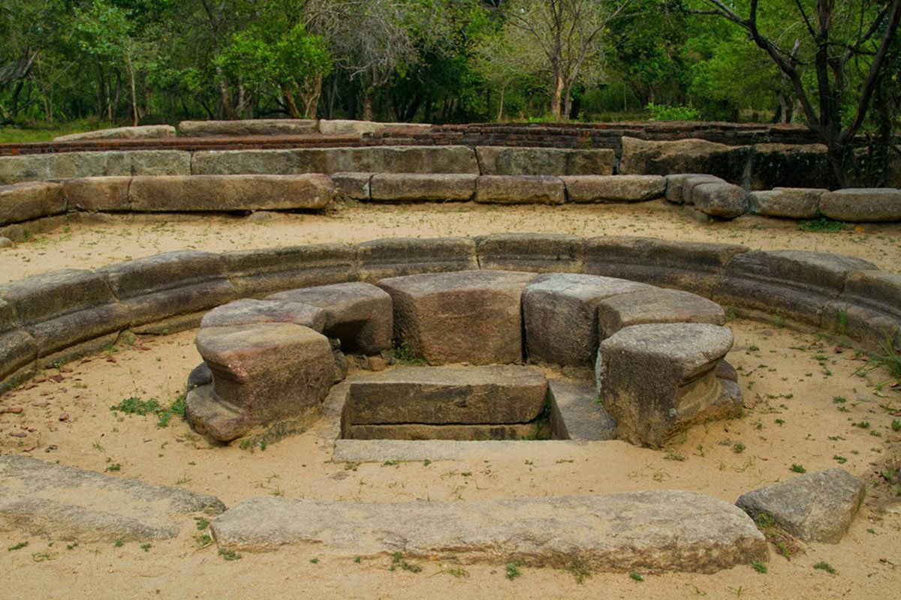
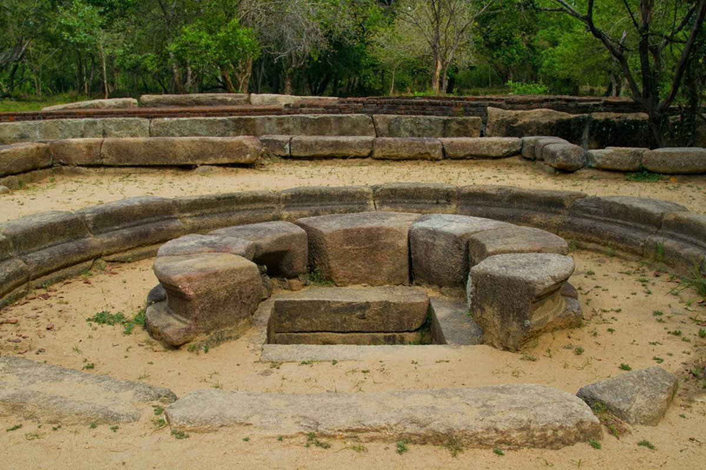

Ampara
Laid-back Ampara sits in the midst of countryside dappled with paddy fields, lakes and palm groves. Though the town itself won’t hold you, the area has a couple of low-key sights. Select points of interest to plot on map by type
Buddhangala Monastery
The Buddhangala Monastery lies deep within the jungles concerning 7 kilometers off Ampara. The Monastery addresses 1280 acres masking 5 rocks the place the stays of the historical monastery can be noticed. This community belonged in direction of the Digamadulla Kingdom which was commenced by means of Prince Dighayu within just the 4th century BC. All whilst the commencing of this monastery is not claimed, Ven Ellawala Medhananda Thero suggests that the background of his monastery is as outdated as the Digamadulla Kingdom. Dropped within just the historical past, included via thick jungle infested with wild pets, unveiled toward the supplies for more than countless numbers of decades, this monastery was introduced back again in the direction of everyday living in just 1964 through a younger courageous bikku referred to as Kalutara Dhammananda, (incumbent substantial priest presently) who traveled during the thick jungles and cleared the Space with the advice of Buddhists inside of the House. This hermitage arrived towards prominence owing to the relics unearthed for the duration of excavation of the authentic stupa. In between, them was a 4-inch gold casket with 3 golden lotus bouquets reputation upon its stems with very carefully positioned relics upon every single of them. The heart flower was tallest and 2 bo leaves upon the other 2 stems experienced the names Sariputha and Maha Moggalana inscribed upon them.


Samangala
Samangala site located in Ampara became very famous because of the
Samangala Cave and the forest hermitage. Samangala cave is situated
to the west of the Kohombana junction of Gonagala-Ampara road. To
the eastern slope of the hill, many drip ledged caves can be seen.
For history enthusiasts, this will be a well worth a visit to
Samangala site. They are used asKuti (shanties) of the monks. You
have to climb up on a steep stair to reach the Bo maluwa and the
main cave. It is believed that since from the past Buddhist monks
came to these caves to involve in medications. A head monk is
guiding and motivating other monks to develop meditation skills on
behalf of freeing from lust and greediness. Nowadays a group of
bhikkus is meditating in the caves. Some are set amidst the caves
for penance. Perhaps you may get astounded by looking at the entire
area. Below the Bo maluwa you can see a stream. Few Christian
Brahmin inscriptions can be seen in the Samangala cave. An
inscription of a Dagoba is illustrated in a high boulder of one
cave. Archaeologists say that the sketch promenaded in the cave is
similar to theSanchi Stupa in India. Such witnesses prove that Sri
Lankans had connections with other Bhikkus from various countries.
More details
Kudumbigala
Kudumbigala is an abandoned sanctuary and a monastery complex located on a range of rocks in Ampara Sri lanka.Other than that it is a sacred groove. Close to it is Kumbukkan oya and Yala National park. Kudumbigala is also known as Chethiya Pabbatha. The hermitage was found and established in 1954 by a devotee named Mathree. Since it was rediscovered it was hidden in the thick jungle. Upasaka maithree was a catholic. But he came to Kudumbigala and cleaned and safeguarded it. Therefore we must be grateful to him for protecting this historic place. Though it is a historically valuable destination built by King Decanam piya tissa in 2nd century B.C. It is recognized as the first refuge made for Bhikku. He is the initiator to establish Buddhsm in Sri Lanka. Kudumbigala monastery complex is located on a land of 600 acre. Kudumbigala can be reached easily from Panama (11 miles from panama and 17 from Kumana village). There are over 200 cave reservations. The caves were carved with drip ledgers (Kattarama) in order to protect the caves from rain. The inner walls of the cave are plastered and painted with enthusiastic paintings and frescoes. Rather than other archeological sites Kudumbigala is a untouched complex of cave sand buildings. Apart from that today few monks at the Kudumbigala viharaya are imitating the meditations.
Deegawapiya
Deegawapiya is one of bunches of 16 places which have been blessed
with Lord Buddhas presence. Henceforward it is another famous
destination in most attractive tourism destinations in Sri lanka.
Later the Dagoba appeared like a thick jungle. Due to the
reconstructions carried out by the authorities, Henceforth it has
become a monastic complex that can be visited for every traveler.
Eventually ended devastating war in Sri lanka it will be a great
opportunity to explore Sri lankan cultural and Religious monuments.
In order to reach Digawapiya, take Ampara- Akkaraipaththu Road
first. Within 18 km off from Ampara city you will find the Dagoba.
On the 8th year of seizing enlightenment, Lord Buddha decided to
visit Sri Lanka for the 3rd time. On his journey he waited for a
while at Digawapiya and spent time for meditating. It is said that
Buddha visited Sri lanka with 5000 arahants. Mahavansaha
(substantial documentary about history o Sri lanka, written in 5th
century) reveals that, king Sadhdhatissa (137-119B.C) initiated to
construct this Dagoba. Not only that but also Samanthapasadika (Pali
chornicle) reports the same.
More details
Magul Maha Viharaya
Magul maha viharaya is just one of the clusters of sites which travelers esteem about. In other names it is Ruhunu Maha Viharaya. The Magul maha vihara monastery complex is located to the southern part of Sithulpawwa. So that you can take the siyabalanduwa-pottuvil road and travel for about 22 km off from Siyambalandwa. Otherwise you can take 11 km off from Pottuvil. The viharaya is deemed as the place where King Kavantissa (2nd century) used to marry Princess Vihara Maha Devi. People believe that the ruined Magul maduwa was the place where the wedding ceremony took place. Never the less it is said that the wedding ceremony of King kavantissa was celebrated in a place nearby Muhudu Maha Viharaya at Arugam Bay. Another version is that it was built by King Datusena (516 126A.D). Later it was revamped by Queen Viharamahadevi. Queen viharamahadevi is the wife of KingBuvaneka bahu 5 og Gampola Kingdom. In so far as it is difficult to elect which version of the history is correct. There is a stone scripture which dates back to 14th century. Yet magul maha is situated in a part of the Yala national park, covers an area about 10000 acres. On the way to the temple you will meet a Lake with Lotus flowers. Ruins of a ancient Dagoba are still surviving. The vihara consist of a unique Moonstone (sanda kada pahana) which is a remarkable masterpiece of Sinhalese. Usually there were no mahouts in the moonstones designed within all kingdoms. But here the elephants with mahouts are carved in this half circle shaped moonstone. The dwarfs in Rock crafts have hindered the entrance of evil eye.


 



Peace Pagoda Ampara
Graceful Peace Pagoda temple is an inspiration about peace and
Buddhism. Withal it is an enormous shrine and a memorial to prompt
the community for no- violence. Local and foreign travelers who are
intended to relax and free their minds are welcome. Peace Pagoda at
Ampara was built in 27th of February in 1988.These stupas are built
under the guidance of Nichidatsu Fuhi thero; founder of the
Nipponzan Myohoji Nikaya. Nichiadtsu Fuhi thero was motivated of a
meeting with Mahatma Gandhi in 1931. Therefore he decided to promote
nonviolence voluntarily. Nichiadtsu Fuhi thero begun to build these
stupas in 1947. He traveled all around the world and demonstrates
the communities about peace and harmony. Somehow his work has become
successful. The firstly built stupas were symbols of peace in the
Japanese cities of Hiroshima and Nagasaki where a massive
destruction took place because of the atomic explosions during the
Wold War 2. He had built over 80 stupas at the end of the year 2000.
There are 4 Peace Pagoda stupas located at various destinations of
Sri lanka. They are constructed at Ampara, Bandarawela, Galle, and
Walapane. Even though it is a notion of the friendship between Sri
lanka and Japan.
More details